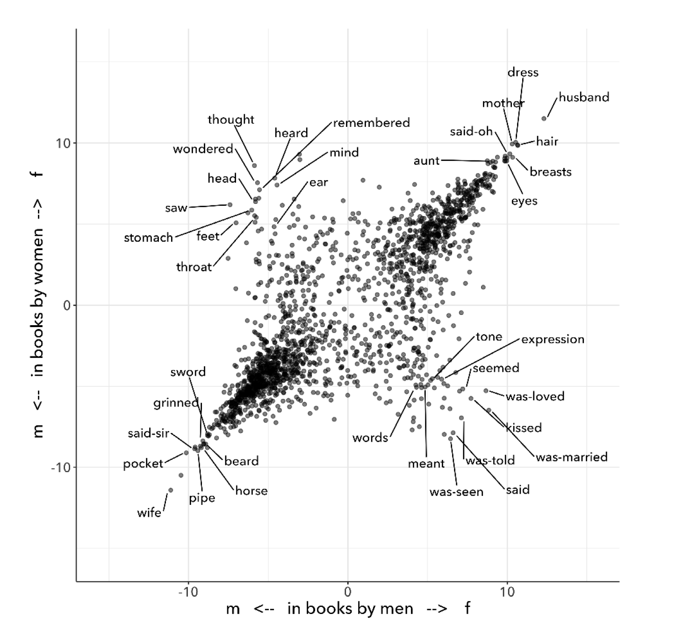

Table of Contents
1. CHAPTER TWO "Text Analysis"
1.1. Doubt
1
The novel Orlando: A Biography (1928), by Virginia Woolf, famously opens with an assertive gender designation followed by an immediate qualification: “He—-for there could be no doubt of his sex, though the fashion of the time did something to disguise it" (11).
2
In order to perform quantitative text analysis on this text, the standard tasks of "pre-processing" or "cleaning" would evacuate this sentence of its gender qualification. Cleaning the first sentence not only would strip it of its pronouns, including the gender assertion in the first word, “He.” It would also cut the em dash immediately following this “He,” signaling the entrance of the narrator and his conspicuous certitude: “—for there could be no doubt of his sex….” Only the following list of words would remain:
3
‘could’, ‘doubt’, ‘sex’, ‘though’, ‘fashion’, ‘time’, ‘something’, ‘disguise’
Text analysis, a process which involves calculating and visualizing textual patterns, requires transforming the source text into a computable format. Cleaning the text strips capitalized words, punctuation, “stop words” (such as articles and prepositions), and inflections in word endings, all of which are deemed to be semantically minor, and wouldn't affect the analysis of more substantial features like nouns, verbs, adverbs, and adjectives. Text analysis requires removing such "minor" elements of language in order to find connections among more apprently substantial terms.
4
The so-called minor elements of the first sentence, particularly the em dash following the "He," betrays the book's investment in gender subversion. As Pamela Caughie points out about the first sentence, "immediately our doubt is aroused… The emphasis on an innocent pronoun makes it suspect" ("Double Discourse" 42). Indeed, pronouns cannot be minor in a text about a fictional biography of a 16th-century English nobleman who lives 300 years and undergoes a sex change. Orlando: A Biography is a fantastical novel that defies gender and genre expectations. Most famously, the main character himself, Orlando, begins the story as a man and inexplicably changes gender to female about halfway through the novel. Additionally, although hundreds of years pass, Orlando doesn't age, but remains 30 old.
5
This chapter examines how quantitative text analysis works to analyze gender by using Woolf’s Orlando as a test case. It explores an experimental approach to text analysis that deconstructs gender binaries by drawing connections between computer programming and gender theory. This analysis surfaces a mechanism common to both text analysis and gender performativity, which is iteration. There is an iterative method that works on both text analysis and on gender which, I argue, can be harnessed to resignify text analysis procedures. This chapter proposes a text analysis procedure that iterates through various gender terms in Orlando, to re-signify their meaning within binary constraints. The goal here is to work within constrictive structures, like the gender binary, in order to unmake them from the inside.
1.2. Falsifiable
1
When I started graduate school in 2016, quantitative text analysis had broken through academic circles into popular discourse. The Literary Studies scholar responsible was Franco Moretti, who introduced many both within and beyond the academy to "distant reading," and published a series of polemical essays in a collection of the same name in 2008. Distant reading, by Moretti's account, involves counting up textual features to derive textual patterns and make inferences. It is an analytical perspective where "distance," he explains, "is a condition of knowledge" (Distant Reading 48).
2
A New York Times feature of the scholar, released in 2017, helped to propel Moretti and distant reading to audiences beyond the academy. However, shortly after, three former students of Moretti came forward to accuse him of sexual crimes. The accusations ranged from unsolicited touching to rape. At the time of the alleged incident, one of his accusers was a first-year graduate student.
When I was a graduate student at UC Berkeley in 1984-85, my then-professor Franco Moretti sexually stalked, pressured, and raped me. He specifically said to me, 'You American girls say no when you mean yes.'[…] I reported him to the Title IX officer […] and he threatened to ruin my career if I pressed charges against him. He said he had powerful friends who were attorneys who would ruin my name. I remained silent for all these years because I was in academia" (Kimberly Latta "Op-Ed: What Happened?" 2017).
When the women came forward, Stanford went no further than claiming they would review the cases. There has been no record of an inquiry, investigation, or any repercussions for Moretti (Liu, Knowles, "Harassment, assault allegations against Moretti span three campuses"). He remains an Emeritus Professor at the same institution.
3
Moretti, at the time, was riding his first wave of academic celebrity. Invited to teach at Berkeley, he had just published a collection of essays, Signs Taken For Wonders: On the Sociology of Literary Forms (1983), a book which expressed his already polemical style and sowed the roots of his quantitative approach to studying literature. The first essay, "The Soul and the Harpy/," takes traditional literary criticism as its target, critiquing the methodology of close reading. According to Moretti, close reading is overly subjective, turning the critic to a kind of "Narcissus", "whose only pleasure lay in contemplating his own reflection (“Soul” 14). He proposes an alternative, "falsifiable criticism," a methodology that pursues answers which are irrefuatable. He asserts that,
“The day criticism gives up the battle cry ‘it is possible to interpret this element in the following way,’ to replace it with the much more prosaic ‘the following interpretation is impossible for such and such a reason,’ it will have taken a huge step forward on the road of methodological solidity” (“Soul” 22).
Moretti here implicitly aligns literary criticism with methodologies from the sciences, methods which are "reproducible."1 This kind of methodology squashes the possibility of pesky, alternative interpretations, in afor of conclusions which are “coherent, univocal, and complete” (“Soul” 21).
4
20 years later, falsifiable criticism will find an ideal methodology in quantification. Rather close attention to individual samples, quantification is based on counting patterns across wide swaths of text. Moretti says "we know how to read texts, now let's learn how not to read them" (Distant Reading 48). Quantification, as we will see below, simplifies text into workable units which is the basis for higher levels of computation. These simple, workable units enable ambitious interpreptations. Moretti explains, "If we want to understand the system in its entirety, we must accept losing something. We always pay a price for theoretical knowledge" (Distant Reading 49).
5
As a young graduate student, I found Moretti's writing both striking and alluring. He is an assertive writer, using mostly short sentences that give his prose a quick rhythm. Despite drawing from disparate fields of knowledge, such as evolutionary theory, systems theory, and Marxism, his arguments move at a light clip, circling methodically around a drain so that, as long as you're following him, there appears to be no alternative. Paragraphs begin with sentences like,
So, the market selects the canon. (69)
So. As novelistic forms travel through the literary system, their plots are (largely) preserved, while their styles are (partly) lost—and replaced by 'local' ones. (134)
What did the birth of a consumer society mean for the European novel? More novels, less attention. (175)
The major metamorphosis of eighteenth-century titles is simple: in the space of two generations, they become much, much shorter. (182)
As the market expands, titles contract; as they do that, they learn to compress meaning; and as they do that, they develop special 'signals' to place books in the right market niche. (204)
These sentences, taken from mostly different essays in Distant Reading, synthesize arguments and evidence from previous paragraphs. They are more summary of previous points than new argumentation. Yet, their apparent solidity, the lack of a subjective "I" to ground them, strikes me as suspect. It showcases Moretti's characteristic way of transforming inferences, premises, and hypotheses into declarative statements, stating a claim or hypothesis as an objective or self-evident fact.
6
In one of the more famous essays from Distant Reading, "Style, Inc.: Reflections on 7000 Titles (British Novels, 1740-1850)" Moretti uses text analysis to study the market for British novels from 1740 - 1850. Here, he explores what titles, which shorten in length over the decades, reveal about the rise and fall of certain genres in the market. He outlines his analytical process:
[F]irst, I describe a major metamorphosis of eighteenth-century titles, and try to explain its causes; next, I suggest how a new type of title that emerged around 1800 may have changed what readers expected of novels; and finally, I make a little attempt at quantitative stylistics, examining some strategies by which titles point to specific genres. Three sections, three pieces in the large puzzle of the literary field. (Distant Reading 181-2; emphasis mine)
Moretti's critical method involves posing hypotheses, assembling and analyzing data, making inferences, and occasionally, reframing the original hypotheses. Yet, he repeatedly understates his interpretive moves at each stage of his analysis: “try to explain,” “suggest,” "make a little attempt." As Stephen Ramsay points out, Moretti presents his own insights as a description of reality, as if "data is presented to us… not as something that is also in need of interpretation" (Ramsay, Reading Machines 5). His language not only belies his own role in assembling and interpreting his data, but also his conclusions, for example, that titles function as a proxy for market forces, "a code, in the market: half sign, half ad… where the novel as language meets the novel as commodity" (181). This method misrepresents the role that inferential thinking plays in the admittedly fascinating conclusions he draws, that titles fluctuate in length as a response to market pressures.
7
This faith in the falsifiable–in the power of counting words–infects even those who disavow quantitative methods. A controversial detraction written by Nan Z. Da claims there is a "fundamental mismatch between the statistical tools that are used and the objects to which they are applied"–that is, to literary objects (620, 601). Yet, despite her oppositional stance toward quantitative tools, Da has something in common with those who champion them: she agrees about the objectivity of their procedures. As Ben Schmidt points out, “Far more than anyone I’ve seen in any humanities article, she asserts that scientists do something arcane, powerful, and true" (Schmidt, "A computational critique of a computational critique of computational critique."). Despite their vastly different views on the role of quantitative methods for studying literature, Da and Moretti appear to agree that these methods ought to provide results that are, at the very least, reproducible.
8
A more precise critique of distant reading comes from Lauren Klein, who defly argues that it overlooks details which are necessary to cultural critique. In a talk titled "Distant Reading After Moretti," Klein explains,
[I]t’s not a coincidence that distant reading does not deal well with gender, or with sexuality, or with race. Gender and sexuality and race are precisely the sorts of concepts that have been exposed and interrogated by attending to non-dominant subject positions. And like literary world systems, or "the great unread," the problems associated with these concepts, like sexism or racism, are also problems of scale, but they require an increased attention to, rather than a passing over, of the subject positions that are too easily (if at times unwittingly) occluded when taking a distant view.
Klein's own work tracing these elements proves how careful attention to what is minor or oblique can surface previously suppressed stories. In one project, Klein uses network analysis methods to bring forth the "ghost" of a previously obscured subject, James Hemmings. Hemmings, a slave who worked for Thomas Jefferson until he could negotiate his freedom, appears in brief references in Jefferson's correspondence. By marking up and visualizing these oblique references, Klein "render[s] visible the archival silences implicit in our understanding of chattel slavery today" (665). Her work demonstrates that the details of Hemmings's life, which are deeply distributed in the correspondence data, requires a kind of reading that is close and careful.
9
By contrast to this close and careful attention, distant reading is permeated by great ambition. In Macroanalysis: Digital Methods and Literary History (2013), Matthew Jockers "ask[s] very big questions… regarding how literary trends are employed over time, across periods, within regions"; In Distant Horizons: Digital Evidence and Literary Change (2020) Ted Underwood traces the "larger arcs of literary change that have remained hidden from us by their sheer scale." Most recently, [ADD RECENT EXAMPLES, PREFERABLY MONOGRAPHS?].
10
The ambition to grasp large swaths of literary history may be a proxy for avoiding certain kinds of cultural critique. The proxy functions through an amplification and valorization of what is seemingly objective–for example, the counting of words. With word counts and their resulting graphs and charts doing the work of analysis, one finally closes down the pesky, subjective interpretations asssociated with close reading. One is finally able to say, once and for all, that "the following interpretation is impossible for such and such a reason" (Moretti, “Soul” 22).
11
There are those, however, who disagree about the apparent objectivity of reproducible methods. Ted Underwood, for example, explains that "algorithms are actually bad at being objective and rather good at absorbing human perspectives implicit in the evidence used to train them" (“Machine Learning and Human Perspective” 92). Underwood creates what he calls "perspectival models" of literary data, where models represent different databases associated with different "perspectives." In one project, on studying gender in novels, Underwood uses a binary classification algorithm to cluster terms that male and female writers, two "perspectives," tend to associate with either gender. From the results, he creates a chart which visualizes the differences between male and female writers and their treatment of gender.

In this chart (see Fig. 1), there are two diagonals. The diagonal moving from the bottom-left to top-right corner represents where the genders agree on gendered terms. The bottom-left shows agreement on terms used to describe the male gender ("pocket", "grinned"), and the top-right shows agreement on the female gender ("eyes," "mother"). The opposite diagonal, running from the top-left to bottom-right corners, shows disagreement. The top-left shows terms that each gender tends to use to describe their own gender ("wondered", "mind") and the bottom-right shows terms that each gender uses to describe the opposite gender ("meant", "kissed"). The chart, according to Underwood, shows two perspectives on gender–the male and the female. Rather than making claims to gender in an objective sense, it dramatizes a perspectival shift between the two genders.
12
Underwood's methodology, as he himself admits, reinscribes the gender binary. When explaining the diagram, he predicts that "gender theorists will be frustrated by the binary structure of the diagram… I needed a simple picture, frankly, in order to explain how a quantitative model can be said to represent a perspective" (“Machine Learning and Human Perspective” 98). This reinscription of the "binary structure" happens not only in the choice of model, a classification (i.e. binary) model which makes predictions on a yes/no or, in this case, a male/femal scale. It also happens with the choice in visualizing the results in a way that places male and female genders in opposition. The diagonal going from the bottom-left to the top-right, which finds similarity between the genders, reinforces a stereotypical active/passive binary (among other binaries) between men and women. Similarly, the diagonal going from the top-left to the bottom-right, although based on agreement between the genders and their relationships to themselves, nonetheless imposes an opposition between how male and female authors describe each other. The graph effectively instantiates its implicit assumption that male and female writers will oppose the other by visualizing this as a feature.
Beyond this reification of the gender binary, however, Underwood's visualization effectively deploys the gender binary as a model for proving the value of quantitative methods. In order for his experiment to take place, the gender binary is a necessary presumption, a "ground truth," that makes the choice of a classification model appear appropriate. In other words, before he even constructs the diagram, gender roles have been already manufactured into opposition.
13 (this paragraph needs to be better integrated, or perhaps moved to another section of the paper)
The gender binary is naturally and necessarily part of the large ambitions of text analysis. As Katherine Bode argues, "Underwood’s proposal to replace data modeling with sampling and comparison, alone or in concert with perspectival modeling, is ultimately inseparable from his view of the literary past as a single system of interlocking parts" (“What’s the Matter with Computational Literary Studies?" 116). Bode's own approach for using computation, which they use to study Australian literature, draws from feminist physicist Karen Barad. Bode adapts Barad's concept of "intra-action," where objects and observers come into being through acts of observation, into computational environments.2 Bode suggests that "we can understand our databases or models as part of the ongoing materialisation of literary texts as emerging events always arising from an altering how the literary pastas reconfigured" (emphasis mine; Bode, Katherine. "Computational Modeling: From Data Representation to Performative Materiality." ATNU/IES Virtual Speaker Series 2020/2021. Newcastle University, UK. November 26, 2020.)
14
There are valid and provocative reasons to study gender as a binary system. But when driven by the interest of posing one gender against another, ("how to distinguish between male and female writers?") such experiments end up effectively reifying the binary. Alternatively, other work uses the binary to deconstruct categorization in the first place. For example, Laura Mandell studies gender through genre. Mandell deploys the popular stylometry measurement, “Burrow’s Delta,” which visualizes the “distance” between writing styles by creating branches ("deltas") between different texts. She finds that Mary Wollstonecraft's style is shared across comparable male writers like William Godwin and Samuel Johnson: “Wollstonecraft’s sentimental anti-Jacobin novels most resemble Godwin’s sentimental anti-Jacobin novels… whereas her essays most resemble Johnson’s writings” ("Gender and Cultural Analytics:: Finding or Making Stereotypes?" par. 29). Her analysis creates new categories that draw gender into genre–squaring the gender binary. She creates doubly refracted categories like, "men writing as men," "women writing as women," "women writing as men," "men writing as women" (par. 35).
15
Applying text analysis to racial categories, Edwin Roland and Richard Jean So explore whether a machine can correctly identify the race of a novel's author. The point, they are careful to say, is not to test whether the machine is correct, but to examine how the categories themselves are constructed. As they explain, "the machine simply measures the robustness of the social constructedness of these given categories and points out what gives them such vigor" ("Race and Distant Reading" 69). Analyzing a large corpus of novels by white and black authors, So and Roland find that black authors generally display more varied vocabulary than white authors. From this result, they infer that White authorship only coheres as a category against the variance of Black authorship. In other words, White authorship is only visible as a category when it is compared to Black authorship, which displays overall more varied uses of language forms.
Interestingly, this quantitative exercise points Roland and So toward a peculiarity in the results: that the algorithm wrongly categorizes Black-authored novel, James Baldwin's Giovanni’s Room (1956), as being written by a White author. This misclassification is due to a single word–"appalled"–whose usage, according to the model, has generally been a signal of White authorship. The term only occurs once in the text, in an early scene where the narrator David describes his strained relationship to his father: “I did not want to be his buddy. I wanted to be his son. What passed between us as masculine candor exhausted and appalled me” (Rpt. in Roland, So 71; emphasis mine). Given the connotation of whiteness in "appalled" and its middle French root, “apalir” (to grow pale), Roland and So explain that this term–which emerged as a result of the computer's mistake–enables their analysis to coordinate gender to race: “the moment David develops a troubled relationship to normative masculinity [as] also the moment he becomes ‘White’” (71). Rather than reify racial categories, this computational experiment points out that they are constructed on certain assumptions.
16
So and Roland began with the binary form, the binary categories of Black/White, but they ended with its fracturing. This fracturing, evident in the computer's misclassification of authorship in Giovanni's Room, leads to a reading which coordinates race with gender and sexuality. This "queering the machine’s color line," the authors explain, opens up new readings of intersectionality in the novel which "in their current form, our data and model are not robust enough to handle" (72). Rather than reproducible, this method is fracturing and refractive, both reflecting and corrupting the constructed nature of binary structures back at the critic. It brings us closer to the methodology that I outline in the next section, iteration.
1.3. Iteration in gender
1
Some text analysis projects take the language of performance and qualities of the performative to describe and conceptualize their methodologies. For example, Mandell's project takes the behavioral quality of gender performativity and applies it to genre, asserting that both gender and genre "are… highly imitatable," so that "anyone can adopt gendered modes of behavior, just as anyone can write in genres stereotypically labeled M/F" (par. 30). In Computational Literary Studies (CLS), Bode operationalizes the "performative" to describe the analytical act itself, which intervenes and becomes inseparable from the object of analysis. "Peformativity," they argue, is "attuned to the coconstitution of computational methods and objects" ("What's the Matter with Computational Literary Studies"). Their research explores how "meaning is not carried by texts but produced in situated interactions between readers, texts and contexts," including computational tools.3 From the field of Computational Humanities, Kent K. Chang, Anna Ho and David Bamman cite performativity as motivation to computationally "measure subversion" in TV show dialogue, to predict whether samples of a TV show, The Big Bang Theory, are queer-coded.
2
My examination surfaces a particular mechanism that drives performativity—which is the mechanism of iteration, a process of repetition by which gender performativity both operates, and by which it can also be exploited. This focus on iteration addresses a common misreading of performativity, that it denotes a series of acts that can be imitated at will. Indeed, Butler's follow up to Gender Trouble: Feminism and the Subversion of Identity (1990), which is Bodies that Matter: on the Discursive Limits of Sex (1996), aimed to clarify how performativity is compulsory, bounded on all sides by social norms in ways that delimit a subject's agency. In Bodies that Matter, Butler explains that gender performativity is a pre-determined procedure that constitutes subjectivity: "there is no subject who decides on its gender…. on the contrary, gender is part of what decides the subject" (ix).
That being said, performativity can be subverted, according to Butler. Rather than through individual will, however, subversion comes from manipulating this iterative process. This manipulation brings something something unexpected and extraneous into the performance, while staying within the very terms of that performance, as I explain below.
3
To understand how this possibility for subversion works, one must first understand how the performative is constituted, according to Butler. Essential to Butler's thinking is the poststructuralist feminist theorist, Luce Irigaray and her methodology for critiquing masculine language in her book, The Sex Which Is Not One (Irigaray 23). Irigaray argues that philosophers like Plato, Aristotle, Descartes, and others, represent the feminine through masculine terms, "on the basis of masculine parameters," which is through the binary form (18). Irigaray argues that the Male/Female binary (among other binaries) effectively precludes the representation of the other term, the feminine. Moreover, this exclusion of the feminine, as it happens, effectively produces another feminine within the terms of the masculinist system. In other words, the feminine which has been excluded from the system, which must be excluded in order for that system to work, into what Butler calls the "constitutive outside," makes possible the creation of the inner, "domesticated" feminine. This feminine, which is "unspeakable" and unrepresentable, is the matter from which the Male/Female binary comes into intelligibility.
4
The excluded feminine is, Butler explains, a matrix. In Butler's words,
every explicit distinction takes place in an inscriptional space that the distinction itself cannot accomodate. Matter as a site of inscription cannot be explicitly thematized… [this] inarticulate "matter" designates the constitutive outside of the Platonic economy; it is what must be excluded for that economy to posture as internally coherent (emphasis original, 12-13).
This matrix, this "inscriptional space", which cannot be articulated, draws simultaneously from a classical analogy between the form/matter and masculine/feminine, in the Aristotelian tradition, and from the etymological association between the feminine as mater (mother). It is the generative material for all life, from which all distinctions of male/female can emerge.
5
But where is this excluded feminine? If it indeed "cannot be thematized," could it possibly be invoked, without subscribing itself to the ruling, masculine structure?
6
The answer invovles breaking open performativity's process of repetition. Performativity relies on repetition, a perpetual re-creation of the norm, which effectively produces and re-produces power structures. As Butler explains, "performativity must be understood not as a singular or deliberate 'act,' but, rather, as the reiterative and citational practice by which discourse produces the effects that it names" (xii). According to Butler, it is through performativity that "sexed" bodies emerge: "'Sex' is not a simple fact or static condition of a body, but a process whereby regulatory norms materialize 'sex' and achieve this materialization through a forcible reiteration of those norms" (xii). What appears as physical or biological category is actually a "sedimentation" formed through repetition.
7
This sedimentation, whereby meaning is signified and re-signified endlessly, is never complete. Categories like sex, as Butler explains, require constant repetition:
This "being a man" and this "being a woman" are internally unstable affairs. They are always beset by ambivalence precisely because there is a cost in every identification, the loss of some other set of identifications, the forcible approximation of a norm one never chooses, a norm that chooses us. (86)
By this "cost in every identification," Butler means all of the identifications which are effectively rejected when one makes a claim to identity. Repetition stabilizes gender identity against a field of potential exclusions. And it is these exlusions which will come back to haunt the coherence of the identity.
8
This mechanism of repetition, which Butler calls "iteration," creates an excluded field of possible identities. As Butler explains, every "identification takes place through a repudiation which produces a domain of abjection" (xiii). However, these repudiated, disavowed identities offer "a field of disruptive possibillities," where terms may draw from rejected meanings to be resignified. Such resignfications destabilize the stability of the claimed identity, "threaten[ing] to expose the self-grounding presumptions of the sexed subject" (xiii).
9
Butler offers an example with the term "queer," which is a term that harnesses its own history of repudiation for political purposes. The adoption of this term by Gay and Lesbian activism in the 80s and 90s "resignif[ies] the abjection of homosexuality into defiance and legitimacy" (Butler xxviii). This turning of abjection into legitimacy shows how one attains some kind of agency even within the terms of subjection.
The compulsion to repeat an injury is not necessarily the compulsion to repeat the injury in the same way or to stay fully within the traumatic orbit of that injury. The force of repetition in language may be the paradoxical condition by which a certain agency—not linked to a fiction of the ego as master of circumstance—is derived from the impossibility of choice. (183)
It is through the repetition of repudiated meanings, which necessarily draw from insulting and/or painful pasts, come to alchemize new significations. If a repudiated meaning, a "troubling return," is repeated enough times, Butler argues, the stability of the original identity will be brought into question. The paradox is that what appears to be a cyclical or even robotic behavior takes on an agentic capacity.
10
Returning to Irigaray, Butler explains that Irigaray achieves a kind of subversion of the masculinist system of representation by "mim[ing] philosophy… and, in the mime, tak[ing] on a language that effectively cannot belong to her" (12). Butler cites a passage where Irigaray "mimes" the style of Plato. By taking on Plato's language, Irigaray "performs a repetition and displacement of the phallic economy" (Butler 18). In an interesting double mimicry, with Butler mimicking Irigaray mimicking Plato, Butler writes,
I will not be a poor copy in your system, but I will resemble you nevertheless by miming the textual passages through which you construct your system and showing that what cannot enter it is already inside it (as its necessary outside), and I will mime and repeat the gestures of your operation until this emergence of the outside within the system calls into question its systematic closure and its pretension to be self-grounding. (18)
Irigaray undermines the authority of the masculine through repetition, "cit[ing] Plato again and again," in a re-iterative practice (18). This practice has a cumulative effect, which is to "expose precisely what is excluded" from the system, and "to reintroduce the excluded into the system itself" (Butler 18). Through iteration, one displaces the expectation, the norm, to suggest something else. This something else, however, is not meant to replace the norm, but to undermine its pretensions. Butler explains that "This is a taking of his [Plato's] place, not to assume it, but to show that it is occupiable… a kind of overreading which mimes and exposes the speculative excesses in Plato (emphasis original, 11).
11
The mechanism of iteration aims to destabilize the ruling system from within. And this is where Butler's theory is often misunderstood. For example, Chang et. al's text analysis project, cited above, argues that "subversion" occurs through two straight characters whose dialogue expresses homosexual innuendo in a popular TV show, The Big Bang Theory. The authors claim that "an undercurrent of emotional intimacy and dependency… challenges the rigid boundaries of what is considered acceptable" on the show (Chang et al., 10). However, according to Butler, subversion requires a destabilization from the inside in a way that occupies and displaces the expected norm. These characters, however much they are queer-coded, ultimately remain within hetersexual relationships. The show thus reproduces what Butler describes as "drag as high het entertainment":
[T]hink of Julie Andrews in Victor, Victoria or Dustin Hoffmann in Tootsie or Jack Lemmon in Some Like It Hot where the anxiety over a possible homosexual consequence is both produced and deflected within the narrative trajectory of the films. These are films which produce and contain the homosexual excess of any given drag performance, the fear that an apparently heterosexual contact might be made before the discovery of a nonapparent homosexuality. (85)
Butler explicitly stipulates against "forms of drag that heterosexual culture produces for itself," which effectively prop up heterosexual regimes. Rather than queerness as subversion, this is closer to what Irigaray describes as the "domesticated" element. In this case, potential subversion is domesticated by humor, which "produce[s] and contain[s] the homosexual excess" of the show.
12
Subversion then, is a kind of occupation of meaning that works toward displacement through resemblance. It occurs by way of overreading, as Irigaray does with her mimicry of Plato's style. The key is repetition, or more precisely, iteration, a continual miming of the authorizing norm. Through the iterative process, one brings back again and again the repudiated meaning: through subservience, insubordination.
1.4. Iteration in python
1
As with gender theory, iteration is a core concept in programming. Iteration means repeating the same action to each bit of data in a collection of data. For text analysis in particular, it is immensely useful.
2
For example, the looping mechanism effectively "cleans" a text one word at at time. Cleaning typically involves removing elements like articles and prepositions whose high frequencies would obstruct quantitative analysis.4 Using a loop, a person may iterate through each word in a text, check whether it needs to be "cleaned," and then perform a set of cleaning actions.
clean = []
for word in text:
if word.isalpha():
clean.append(word.lower())
The first line of code here creates an empty placeholder, clean,
where words will be saved in their clean form. Then, the next line
begins the for loop, which specifies a series of actions to execute
on each word in the text, in this case, in Woolf's novel, Orlando.
The loop will first take the first word, "He," and then the second
word, which is in this case a punctuation, an em dash, "—," and
next, the preposition "for," and so on. The third line contains a
filter, isalpha(), which checks if the word is comprised of only
alphabetic characters (i.e. it is not a number or punctuation). If the
word is alphabetic, it passes the filter (at this point, the em dash
would fail this requirement, and wouldn't pass to the next line). At
the next line, the word is lowercased, lower() and finally added to
the empty list, clean.
The loop runs over each word in Orlando, one by one. When the loop
is done running, the final list of words in clean will contain
alphabetic and lowercased letters. For example, here is what remains
of the first sentence of the novel, with all words in are lowercase,
and no punctuation.
['he', 'for', 'there', 'could', 'be', 'no' 'doubt', 'of', 'his' 'sex', 'though', 'the' 'fashion', 'of', 'the' 'time', 'did', 'something', 'to', 'disguise', 'it']
3
The next step in cleaning is to remove overly frequent words called "stop words." These words consist of prepositions, articles, pronouns, and auxiliary verbs—all of which are deemed to be semantically insubstantial relative to their frequency.
stop-words = ["i", "me", "my", "myself", "we", "our", "ours",
"ourselves", "you", "your", "yours", "yourself",
"yourselves", "he", "him", "his", "himself", "she", "her",
"hers", "herself", "it", "its", "itself", "they", "them",
"their", "theirs", "themselves", "what", "which", "who",
"whom", "this", "that", "these", "those", "am", "is", "are",
"was", "were", "be", "been", "being", "have", "has", "had",
"having", "do", "does", "did", "doing", "a", "an", "the",
"and", "but", "if", "or", "because", "as", "until", "while",
"of", "at", "by", "for", "with", "about", "against",
"between", "into", "through", "during", "before", "after",
"above", "below", "to", "from", "up", "down", "in", "out",
"on", "off", "over", "under", "again", "further", "then",
"once", "here", "there", "when", "where", "why", "how",
"all", "any", "both", "each", "few", "more", "most", "other",
"some", "such", "no", "nor", "not", "only", "own", "same",
"so", "than", "too", "very", "s", "t", "can", "will", "just",
"don", "should", "now"]
This step can be added as an additional line, or filter, to the above
loop. After passing the filter that checks for alphabetic text, the
loop will then check for stop words. If the word is not a stop word,
it will pass to the next line to be lowercased and added to the list
clean.
clean = []
for word in text:
if word.isalpha():
if word not in stop-words:
clean.append(word.lower())
4
After this additional level of cleaning, the following words remain from the first sentence of Orlando:
['could', 'doubt', 'sex', 'though', 'fashion', 'time', 'something', 'disguise']
5
The final step of cleaning is to get each word's root form, so as to avoid counting the same word as instances of different words, like "run" and "running," or "child" and "children." This step involves stripping word inflections to word's root form, called a "lemma".
To do so, we add a line to our loop that look up each word, one by
one, and returns the shortest lemma found.5 In the python code,
the lemmatizer function lemmatize() is called from the
WordNetLemmatizer module.
clean = []
for word in text:
if word.isalpha():
if word not in stop-words:
lemma = WordNetLemmatizer.lemmatize(word)
clean.append(lemma.lower())
The above code iterates through the text, passes it through filters
for punctuation/numbers and stop words. If the word passes those
filters, it then feeds it into the lemmatize() function, a kind of
dictionary that looks up the word's root form. The root is saved to
the variable lemma, which is finally lowercased and appended to
clean. After iterating through every word in the no-stops list, and
lemmatizing each one by one, the text is ready for analysis.
6
Text analysis is, at a most basic level, about counting words. From
counting how frequently a word appears, one can start to derive
patterns about word usage. One of the most popular text analysis
libraries in python is the Natural Language Toolkit, or NLTK, written
specifically for linguistic analysis. NLTK comes packaged with useful
functions for simple text analysis tasks, like concordance(), which
displays the "context window" surrounding a given word, and
similar(), which finds words that are used in "similar" contexts to
a given word.
For example, running concordance() on the word "woman" will output
an instance of the word and its context window, a short excerpt
surrounding the target word, from Orlando:
ty manly charm quality old woman loved failed growing old w en without knowing perhaps woman heart intricate ignorance indow pulled among cushion woman laid worn old made bury fa red dyed cheek scarlet old woman loved queen knew man saw o finger swore vilely master woman scarcely le bold speech le ment panic twelve poor old woman parish today drink tea ton perverse cruel disposition woman broke engagement night eve verladen apple old bumboat woman carrying fruit market surr embassy figure whether boy woman loose tunic trouser russia ed stared boy ala boy must woman could skate speed vigour s me standstill handsbreadth woman orlando stared trembled tu d asked tumult emotion old woman answered skin bone trulls and longer full prying old woman said stared one face bumpt save sea bird old country woman hacking ice vain attempt d ce melt heat pity poor old woman natural mean thawing must
This context window shows a text that has been stripped of punctuation, capital letters, prepositions, articles, pronouns, auxiliary words. What remains is largely nouns, verbs, and adverbs.
11
The task is then to count these remains to find patterns. To
demonstrate this process, another NLTK function, called similar()
displays words that are used in similar contexts of the target word.
This function takes a canonical concept from NLP called
"distributional similarity," which measures how often terms appear in
samples of language data. Distributional similarity, which is a key
concept in linguistics, assumes that words which appear in similar
contexts tend to have similar meanings.
To compute the results of similar(), the program first takes the
context of the target word from concordance(). Then, it counts each
of the words surrounding woman. It then looks for words that have the
most shared contexts, that is, the most shared words within their
context window. Finally, it ouputs a list of terms that share the most
contexts with the word. For the word "woman", those words are the
following:
['man', 'moment', 'night', 'boy', 'word', 'world', 'child' 'pen', 'ship', 'door', 'one', 'room', 'window', 'light', 'little', 'lady', 'table', 'book', 'queen', 'king']
12
In this sense, word meaning is understood as related to word similarity, which is computed by counting words and their neighbors. Importantly, the computer does not understand or impute meaning to the words. Rather, it only counts each word as a string, that is, as a piece of data composed of alphanumeric sequences. From there, it derives what we think of as "meaning" from patterns of
13
In fact, the simple act of counting words is also how deep learning methods work. Deep learning methods, like those that drive Large Language Model's text generation processes (discussed in detail in chapter 5), use word patterns from counts to making predictions about which words ought to appear together.
In deep learning, information about word context is stored in the form of "word embeddings" or "word vectors." These embeddings or vectors contain a word's "definition," so to speak, in a machine-interpretable format. A vector for a single word, "woman," like the one below, will contain a list of numbers that represents its relationship to other words from the dataset.
| Token | d1 | d2 | d3 | … | d25 |
| ----------- | ----------- | ----------- | ----------- | --- | ----------- |
| `woman` | -0.92527 | -0.33879 | -0.32138 | … | -0.45112 |
The vector which represents “woman” contains a list of numbers (25 numbers across 25 dimensions) that score the similarity of the word “woman” to other words in the dataset.6
In reality, word vectors are organized into a matrix, into a tabular format. These matrices can be relatively small, like the above GLoVe matrix, which is only 25 dimensions (the number of values per vector), or they may range to millions, billions, and most recently, trillions (the estimate of most recent models from OpenAI and Anthropic, for example).
| Token | d1 | d2 | d3 | … | d25 |
| ----------- | ------------ | ----------- | ------------- | --- | ------------ |
| `worst` | 0.41955 | 0.65852 | 0.12606 | … | -0.29946 |
| `hoes` | 0.52378 | 1.9645 | 0.051545 | … | 0.31016 |
| `woman` | -0.92527 | -0.33879 | -0.32138 | … | -0.45112 |
| `sms` | 2.1047 | 1.1953 | -0.11219 | … | -0.99524 |
| `cuz` | -0.026389 | 1.3791 | 0.57634 | … | 0.10626 |
| `gold` | -0.48171 | -0.55272 | -0.31395 | … | -0.12601 |
| `luck` | -0.28332 | 1.1739 | -0.10735 | … | -0.53487 |
| `business` | 0.077507 | 0.80513 | -1.1954 | … | -0.45832 |
| `wear` | -0.41459 | -0.66893 | 0.072897 | … | -0.76915 |
in anywhere from . Using this matrix format, further mathematical operations are possible using statistics, linear algebra, and calculus—-the building blocks of deep learning methods.
15
They are called "vectors" because these numeric values represent points in a graph. By graphing word similarity, word vectors translate relationships of word context into geometric space.
Like Butler's matter or matrix which produces the binary of masculine/feminine, here is another matrix that produces meaning according to masculinist parameters. The matrix format of the word vector enables a host of mathematical operations and algorithms: from example, cosine similarity calculates the distance between two vectors, that is, two words; and regression analysis guesses the relationship between an independant and dependant variable, or relation between one word and another.
The inventors of word vectors introduced their power to the world via a formula that uses math to compute language meaning (Mikolov et al. 2013). The famous formula uses a mathematical equation to calculate the meaning of the word "Queen". Here, the vector for the word "queen" is calculated by subtracting the vectors of "man" from "king," and finally, adding the vector for "woman."
vector("Queen") = vector("King") - vector("Man") + vector("Woman")
The cross-cultural intelligibility of this formula, which introduced word vectors to the world, cannot be understated. Gender, which is necessarily imbricated with imperialist concepts, becomes an operand for computing language meaning. Like Ted Underwood's graph which puts gender into an oppositional relationship, gender is the model which shows the algorithm to be true.
16
In the following section, I use these word vectors as a starting point to explore terms related to gender terms in Orlando, starting with the terms “woman” and “man.” Although I start with the gender binary, word vectors enable me to quickly proliferate beyond it. Rather than resolving gender into an oppositional structure or a neat formula, it cracks open.
1.5. Fluidity
In what follows, I pursue an iterative reading practice of gender that relies on overreading, not to get at the truth of the gender binary (whatever that may be), but to show that the binary is occupiable.
1
But it is more than Orlando the character who defies realist expectations. As Woolf scholar Pamela Caughie puts it, "The text of Orlando is as unstable as the sex of Orlando" (42). Subtitled A Biography, Orlando draws from English takes real life as its source material–except it re-works this material into what critics Christy Burns and Jane de Gay describe as parody and satire.7 First, English literary history is reproduced and satirized, with each chapter of the novel taking different periods like the Elizabethan, Restoration, and Victorian periods, and featuring (and mocking) characters like Queen Elizabeth and Alexander Pope. Moreover, the model for Orlando's character comes from Virginia's friend and lover, Vita Sackville-West.8 Episodes from Sackville-West's real life, like her heartbreak with the author Violet Trefusis and her disinheritance of the family estate at Knole are represented in Orlando's heartbreak with Sasha and (after her transition) her legal battles over her property and titles. According to critics
The most unstable element of the text, however, is the language, whose experimental quality evokes its peers in the early modernist canon. According to Caughie,
In its rhetorical transports, Woolf's novel challenges the reference theory of meaning. In particular, it questions the notion that words get their meanings from things they refer to; the definition of words and categories by their essential traits; and the isolation of words and statements from their contexts of use in order to interpret them. (Caughie, "Double Discourse, 44-45).9
I agree with Caughie that language's referential power is a major, if not the central, problematic in Orlando. However, unlike Caughie, who positions the main character's gender fluidity as the cause of language's instability, I explore the opposite movement: following Butler, this reading poses language forms as determining and producing gender norms and their re-signification.
2
Crucially, for Butler, re-signification works through iteration, which is repetition with a difference. For the following close reading, I pursue an iterative text analysis method that runs the same quantitative computation over and over again, with slight difference: it intersperces quantitative analysis with close reading, dipping in and out of the text to examine words in their original context. This toggling between close and distant views of language in the novel recalls a procedure that Andrew Piper calls "bifocal" reading, which "explicitly constructs the context through which something is seen as significant" (17).10 Unlike Piper, however, who uses the quantitative component to "cede" "some measure of subjectivity" to the critical process, this method explicitly embraces the critic's inclinations as the driving force of analysis. Inclination, including those motivated by pleasure and surprise, will be essential to divert the expected path of gender's supposed reproducibility.
3
I begin with two gender terms from the novel, "woman" and "man." Using
word vectors, and the Word2Vec,11 library in python, I compute
words used in similar contexts. The function to compute similar words,
written below, uses cosine similarity to caculate the graphical
distance between two words, represented as vectors. In other words,
the function searches for words that appear with similar coordinates
to "woman" and "man" in vector space.12
woman_similar = model.wv.most_similar(positive = "woman", negative = "man") man_similar = model.wv.most_similar(positive = "man", negative = "woman")
To make sure that the outputs of this calculation consist of that are
most characteristic of each gender, I defined the female term in
direct opposition to the male terms. In the code expression, I added
parameters specifying the most "positive" and "negative" associations
between the genders. The results, then, show words that are most
distinctive for each gender, most strongly correlating to "woman"
while also being distant from "man" in vector space.13 I saved
these similar words in separate lists called woman_similar and
man_similar, as seen below.
woman_similar: [(‘soft’, 0.3692586421966553), (‘named’, 0.34212377667427063), (‘sciatica’, 0.3223450779914856), (‘frilled’, 0.3187992572784424), (‘despaired’, 0.31375786662101746), (‘friend’, 0.31238242983818054), (‘delicious’, 0.30853813886642456), (‘winked’, 0.30514153838157654), (‘notion’, 0.3047487139701843), (‘seductiveness’, 0.30290719866752625)]
man_similar: [(‘chequered’, 0.4025157392024994), (‘fact’, 0.3394489586353302), (‘denounced’, 0.3346075117588043), (‘house’, 0.33423593640327454), (‘curiosity’, 0.33144116401672363), (‘defend’, 0.3284823000431061), (‘dancing’, 0.3282632827758789), (‘marbling’, 0.3184848427772522), (‘cynosure’, 0.3057470917701721), (‘rather’, 0.3024100363254547)]
Readers may note that like Underwood's project, this analysis begins with an oppositional formulation of gender, one that places male and female into a positive/negative axis. However, the goal of this analysis is not to reproduce or reify the binary: rather, it is to bring forth what has been repudiated by each term. Like Butler's reading of "queer," this analysis finds that the female and male genders are constituted by certain exclusions which define the other. In what follows, I read into a selection of these terms, examining them in context, to seek out what constitutes their meaning and, eventually, what must be repudiated in order for them to signify.
5
For example, term "delicious." This term only occurs five times in the novel, and only after Orlando transitions into a woman. Three of these occurances appear in a single passage, when Orlando is sailing from Turkey back to her native England. In this passage, the ship captain offers Orlando a slice of beef. After politely refusing, Orlando launches into a rapturous speculation on the joys of womanhood.
‘A little of the fat, Ma’m?’ he asked. ‘Let me cut you just the tiniest little slice the size of your fingernail.’ At those words a delicious tremor ran through her frame. Birds sang; the torrents rushed. It recalled the feeling of indescribable pleasure with which she had first seen Sasha, hundreds of years ago. Then she had pursued, now she fled. Which is the greater ecstasy? The man’s or the woman’s? And are they not perhaps the same? No, she thought, this is the most delicious (thanking the Captain but refusing), to refuse, and see him frown. Well, she would, if he wished it, have the very thinnest, smallest shiver in the world. This was the most delicious of all, to yield and see him smile. ‘For nothing,’ she thought, regaining her couch on deck, and continuing the argument, ‘is more heavenly than to resist and to yield; to yield and to resist. (emphasis mine, 114)
6
Delicious, which is repeated insistently, conspicuously, in this passage, describes a distincly feminine kind of pleasure. In this context, its novelty comes from the opposition to pursuit, here posed as the active form of pleasure proper to the man, that which Orlando enjoyed as a man when he seduced the Russian princess, Sasha. In contrast to the active pleasure of the pursuer, this passive, feminine pleasure is about withholding and, eventually, submitting. Yet, it is not totally passive: it betrays a kind of power, the power in vascillating between refusal and acquiescence, "to resist and to yield" (114).
7
I run another similarity search, iterating on the term "woman," but this time, with "delicious" as the target word. The top result, the word most related to “delicious” in the text, is "culpable." As it happens, this term occurs in the same scene as above, when Orlando is ruminating on the differences between the sexes on the ship. In this section, Orlando considers what her change in sex means for her sexuality:
And as all Orlando’s loves had been women, now, through the culpable laggardry of the human frame to adapt itself to convention, though she herself was a woman, it was still a woman she loved; and if the consciousness of being of the same sex had any effect at all, it was to quicken and deepen those feelings which she had had as a man. (emphasis mine, 119)
8
“Culpable,” from the Latin “culpa,” means fault or blame. In this context, the term modifies the phrase, "the laggardry of the human frame," that is, the human body, "to adapt itself to convention," to the convention heterosexuality, of the female's desire for the male. Like "delicious" above, "culpable" also describes kind of refusal, a refusal to conform to social expectations. But instead of associating refusal with power, it associates it with sexuality. Indeed, this sentence is one of the few in the novel (in all of Woolf's fiction) where homosexuality is considered in explicit terms–"it was still a woman she loved."
The iteration from "delicious" to "culpable" thus models femininity through descriptions of power and passion. If femininity is constituted by these terms, what then constitutes masculinity?
10
Masculinity, as it turns out, is constituted by division. Moving to the terms associated with "man," I begin with the term "chequered," which appears only once, in the first few pages of the story. Here, after describing Orlando's aristocratic lineage ("His fathers had been noble since they had been at all. They came out of the northern mists wearing coronets on their heads"), the narrator paints Orlando stepping into "the yellow pools which chequered the floor, made by the sun falling through the vast coat of arms in the window" (12). His depiction then veers into lush and exagerrated language.
Orlando stood now in the midst of the yellow body of an heraldic leopard. When he put his hand on the window-sill to push the window open, it was instantly coloured red, blue, and yellow like a butterfly's wing. Thus, those who like symbols […] might observe that though the shapely legs, the handsome body, and the well-set shoulders were all of them decorated with various tints of heraldic light, Orlando's face, as he threw the window open, was lit solely by the sun itself. 12
11
The image of Orlando's body cut or chequered into different colored pieces is indeed a symbol, but one of division rather than nobility. This is a condition exacerbated by the narration, which soon gallops into full-fledged figuration:
Directly we glance at Orlando standing by the window, we must admit that he had eyes like drenched violets, so large that the water seemed to have brimmed in them and widened them; and a brow like the swelling of a marble dome pressed between the two blank medallions which were his temples. Directly we glance at eyes and forehead, thus do we rhapsodize. Directly we glance at eyes and forehead, we have to admit a thousand disagreeables which it is the aim of every good biographer to ignore. 12-13
It bears noting that this scene is the first in many scenes in the novel where the narrator, a self-described "scribe," committed to straightforward description, calls into question his credibility as a biographer. When trying to describe Orlando's beauty, he endows it with mystical qualities–his eyes like flowers, his forehead like marble. The narrator’s evocative language undermines his own pretense to objectivity.
12
These momentary slips into figurative language grow into a crisis of signification that recurs persistently through the novel, and entwine with Orlando's own thoughts. Take another term from the list of "woman" vectors, "despaired." Like "chequered," this term occurs in a scene where the line between fiction and reality become blurred. In this scene, Orlando is in the midst of a period of depression following his abandonment by the Russian princess, Sasha. He is lying beneath his favorite Oak tree, ruminating about the meaning of truth, love, and above all, language itself.
‘The sky is blue,’ he said, ‘the grass is green.’ Looking up, he saw that, on the contrary, the sky is like the veils which a thousand Madonnas have let fall from their hair; and the grass fleets and darkens like a flight of girls fleeing the embraces of hairy satyrs from enchanted woods. ‘Upon my word,’ he said (for he had fallen into the bad habit of speaking aloud), ‘I don’t see that one’s more true than another. Both are utterly false.’ And he despaired of being able to solve the problem of what poetry is and what truth is and fell into a deep dejection. 75
13
Like the narrator, Orlando struggles with the referential qualities of language. First, he attempts plain language, "the sky is blue,” “the grass is green.” But these prove insufficient to describe a sky of "veils [from] a thousand Madonnas" and grass that “fleets and darkens" like "girls fleeing." Orlando, like the narrator, cannot make language do the work of expression. So he must turn to figurative elements, comparisons of feminine subtlety and evasion which betray his pain from being recently abandoned by a woman. If in the previous scene, Orlando was divided by different colors of light, here he appears divided by doubt about language and its pretention to describe reality.
13.1
He is divided, that is, until he becomes a woman. In chapter six, a scene which mirrors this one under the Oak tree appears to resolve the the crisis of signification. Orlando, now a woman, watches a toy boat on the Serpentine river in Hyde Park, London. The toy boat incites a waking vision of Shel, her gender-bending husband, who is a sailor: "as she watched the toy boat climb the ripple, she thought she saw [his] ship climb up and up a glassy wall" (PAGE NUMBER). Her thinking climaxes when she sees the little boat make it to the other side of the wavelet.
'Ecstasy!' she cried. 'Ecstasy! Where's the post office?' she wondered. 'For I must wire at once to Shel and tell him…' And repeating 'A toy boat on the Serpentine', and 'Ecstasy', alternately, for the thoughts were interchangeable and meant exactly the same thing, she hurried towards Park Lane.
'A toy boat, a toy boat, a toy boat,' she repeated, thus enforcing upon herself the fact that it is not articles by Nick Greene on John Donne nor eight-hour bills nor covenants nor factory acts that matter; it's something useless, sudden, violent; something that costs a life… that's what it is–a toy boat on the Serpentine, ecstasy–it's ecstasy that matters. PAGE NUMBER
She hurries to telegram the phrases, "a toy boat on the serpentine" and "ecstasy," to Shel, whom she knows will immediately understand what it means. She realizes that language, its power, is violently ecstatic. If before, under the Oak tree, Orlando struggled to describe reality in plain language, now she has the significatory power to equate two apparently unrelated terms.
14
An interesting, final example shows how close language and gender are in the novel. Words from both the “woman” and “man” lists of vectors occur within a single passage, the scene where Orlando first meets his beloved Sasha. The words “curiosity,” from the “man” list, and “seductiveness," from the "woman" list, appear together in Orlando's tumultuous and agonizing attempt to determine Sasha’s gender. Upon seeing Sasha for the first time, cannot tell whether she is a man or a woman:
He beheld, coming from the pavilion of the Muscovite Embassy, a figure, which, whether boy’s or woman’s, for the loose tunic and trousers of the Russian fashion served to disguise the sex, filled him with the highest curiosity. The person, whatever the name or sex, was about middle height, very slenderly fashioned, and dressed entirely in oyster-coloured velvet, trimmed with some unfamiliar greenish-coloured fur. But these details were obscured by the extraordinary seductiveness which issued from the whole person. Images, metaphors of the most extreme and extravagant twined and twisted in his mind. He called her a melon, a pineapple, an olive tree, an emerald, and a fox in the snow all in the space of three seconds; he did not know whether he had heard her, tasted her, seen her, or all three together. (For though we must pause not a moment in the narrative we may here hastily note that all his images at this time were simple in the extreme to match his senses and were mostly taken from things he had liked the taste of as a boy. But if his senses were simple they were at the same time extremely strong. To pause therefore and seek the reasons of things is out of the question)… A melon, an emerald, a fox in the snow—–so he raved, so he stared. When the boy, for alas, a boy it must be––no woman could skate with such speed and vigour—–swept almost on tiptoe past him, Orlando was ready to tear his hair with vexation that the person was of his own sex, and thus all embraces were out of the question. 27-28
Orlando uses seemingly arbitrary metaphors, "A melon, an emerald, a fox in the snow," indicating that at the same time which he cannot place Sasha’s gender, he also cannot find the right words to describe her. This dynamic between gender and language is further developed in the narrative form of the passage: as Sasha's gender oscillates between male and female, so the perspective alternates between Orlando’s interiority and the narrator’s commentary. In particular, the insertion of the narrator’s "pause," a pause which purports to explain Orlando's arbitrary metaphors, signals a breach in the diegetic narrative, which reinforces the constructed quality of the scene. By the end, it is fair to say that both gender and language are illustrated as pliant material, one that can be put toward various uses and expressions.
15
Taking words from both the female and male lists of vectors, this passage suggests that the two genders intersect via language's unstable, expressive qualities. Gender, like language, is fluid. As a thematic, this fluidity has been well documented by critics: Caughie claims that "Woolf brings out the arbitrariness of [sexual] identity, the arbitrariness of language itself, through Orlando’s switching from one sex to the other… as well as through the shifting of her own rhetoric in this novel" (42); Victoria L. Smith asserts that "what happens in the novel… and what it thematizes—-language’s inability to adequately represent the ‘thing itself’—-mirrors the undecidability of the text–is it a biography, an autobiography, fantasy, etc." (58). The above passage, with its “switching” and “shifting” discourse, which asserts that word choices are arbitrary and flowing, implies that gender is also a fluid phenomenon.
In this analysis, fluidity is brought forth through close readings of specific terms, "delicious," "culpable," "chequered," "despaired," and in the longer passage, "seductiveness" and "curiosity." For the terms similar to "woman," gender is constituted by a reclamation of feminine refusal into sign of power more than passivity. The masculine gender is constituted through an association with division, which spreads from Orlando's interior experience to the extradeigetic layer of the narration. Orlando's division points to the novel's larger crisis of signification, which appear to resolve when Orlando becomes a woman. What is divided in the male appears to be resolved in the female. In the end, the repudiated meaning of gender, the meaning which is being brought back through is fluidity.
16
The iterative reading practice brings these meanings of gender to the surface. The lists of word vectors offer starting points for isolating passages throughout the text. As the reader moves from distant to close, from a word vector to its context, the meanings of certain words gain new significations.
1.6. Conclusion
Like Orlando's narration, there is something conspicuous about my own presentation of facts. Attentive readers of Orlando will know that I left out the second half of the first sentence. The rest of the first sentence, "—was in the act of slicing at the head of a Moor which swung from the rafters” (11)."
Race, and the body, is elided in this analysis.
According to Jamie Hovey, gender and nationality are constructed via race and sexuality. "Sexuality and other dimensions of identity, such as nation and race, are seen as performed through gender" (Hovey 397).
"Beginning with an image of a decapitated Moor, Orlando appropriates the exoticized subjects of colonial discourse to create for its protagonist a sexuality that is not bourgeois or heterosexual. However, Orlando's playful but insistent production of white femininity allows the protagonist to pass as respectable and heterosexual by displacing her transgressive sexuality onto racial others, thereby masking Orlando's masculine-identified literary and sexual desires." (Hovey 398).
2
This elision is because there is a limitation to Butler's theory. Common critiques of Butler point out the limits of this theory for posing gender and sexuality as discursive.
Crucially, in Butler's reasoning, the body only materializes (it only matters) through this compulsory repetition of gender norms.
3
According Jay Prosser, Woolf’s experimentation with language and narrative form belies the embodied reality of transsexuality. He argues that “Orlando is not about the sexed body at all but the cultural vicissitudes of gender. As h/er narrative propels h/er through four centuries of history, Orlando is free to move beyond h/er body–quite queerly, to break through the limits of the flesh” (Prosser 168). By “the sexed body,” Prosser means the physical body that exists in a physical world. Orlando’s transgressiveness, Prosser argues, results from a play of language and literary form that elides the specificity and the lived reality of the “sexed body.”
4
A decade later, Omise’eke Natasha Tinsley writes about the problem of gender fluidity as a metaphor. In her essay, “Black Atlantic, Queer Atlantic: Queer Imaginings of the Middle Passage,” Tinsley argues for the imbrication of sexuality and race through the lens of the Black Atlantic.
Her critique re-works the trope of fluidity which, drawing from the ocean, “is not an easy metaphor or queer and racially hybrid identities but for concrete, painful, and liberatory experience” (192-193). For Tinsley, fluidity is an opportunity for “a return to the materiality of water to make its metaphors mean more complexly, shaking off settling into frozen figures” (212). Tinsley theorizes fluidity as a “social liquidation,” being stripped by the water, particulars of identity washed away in the current. She explains that “brown bodies are gender fluid not because they choose parodic proliferations but because they have been ‘washed of all this lading, bag and baggage’” (209).
This is taken up in chapter four on the flesh.
Footnotes:
Sarah Cohen-Boulakia, Khalid Belhajjame, Olivier Collin, Jérôme Chopard, Christine Froidevaux, Alban Gaignard, Konrad Hinsen, Pierre Larmande, Yvan Le Bras, Frédéric Lemoine, Fabien Mareuil, Hervé Ménager, Christophe Pradal, Christophe Blanchet, Scientific workflows for computational reproducibility in the life sciences: Status, challenges and opportunities, Future Generation Computer Systems, Volume 75, 2017, Pages 284-298, ISSN 0167-739X https://doi.org/10.1016/j.future.2017.01.012.
In fact, Barad takes up the concept of performativity which she, like Butler, traces through Derrida and JL Austin. Barad, however, describes their application as "a diffractive elaboration of Butler's… critical insights" (Barad, Posthumanist Performativity, Signs 2003, page 808). In contrast to Butler's focus on citation, Barad emphasizes relation and intra-action. See Barad, "Nature's Queer Performativity," 2012, footnote 27 on page 49.
Bode, Katherine. “Data beyond representation: From computational modelling to performative materiality.” MLA Convention, Seattle, 10 January 2020. https://katherinebode.wordpress.com/home/mla-convention-2020/
Elements that are highly frequent, like articles, prepositions, and even pronouns, can drown out other terms which are considered more substantial, like nouns and verbs. Additionally, irregular cases also need to be standardized, because capital letters would count toward different words (for example, "talk" and "Talk" would be considered two different words). For similar reasons, word endings and inflections like plural forms (endings in "s") and tenses ('walked', 'walks' or 'walking') are converted into a root form.
It uses the WordNet database, an electronic lexical database used for computational linguistics. WordNet contains every word's root form, as well as "synsets" or synonym sets, representing underlying relationships between word.
Christiane Fellbaum (1998, ed.) WordNet: An Electronic Lexical Database. Cambridge, MA: MIT Press.
Known as the "GLoVe" dataset: Jeffrey Pennington, Richard Socher, and Christopher D. Manning. 2014. GloVe: Global Vectors for Word Representation.
Burns, Christy L. “Re-Dressing Feminist Identities: Tensions between Essential and Constructed Selves in Virginia Woolf's Orlando.” Twentieth Century Literature, vol. 40, no. 3, 1994, pp. 342–364. JSTOR, www.jstor.org/stable/441560; De Gay, Jane. "Virginia Woolf's feminist historiography in Orlando." Critical Survey, vol. 19, no. 1, 2007, p. 62+.
“‘If I Saw You Would You Kiss Me?": Sapphism and the Subversiveness of Virginia Woolf's Orlando.” PMLA, vol. 103, no. 1, 1988, pp. 24–34. www.jstor.org/stable/462459
Pamela Caughie. “Virginia Woolf’s Double Discourse.” Discontented Discourses : Feminism/textual Intervention/psychoanalysis. Ed. Marleen S. Barr & Richard Feldstein. Urbana, IL: University of Illinois Press, 1989. 41–53.
Andrew Piper, Enumerations, University of Chicago Press, 2019. page 18.
Link to Word2Vec source code: https://radimrehurek.com/gensim/models/word2vec.html#gensim.models.word2vec.Word2Vec
The documentation describes similar_words() "computes
cosine similarity between a simple mean of the projection weight
vectors of the given keys and the vectors for each key in the model…
correspond[ing] to the word-analogy and distance scripts in the
original word2vec implementation.". Link to most_similar() source
code:
https://radimrehurek.com/gensim/models/keyedvectors.html#gensim.models.keyedvectors.KeyedVectors.most_similar
Link to file from this project's source code: https://github.com/gofilipa/qdr/blob/master/lib/actions.py